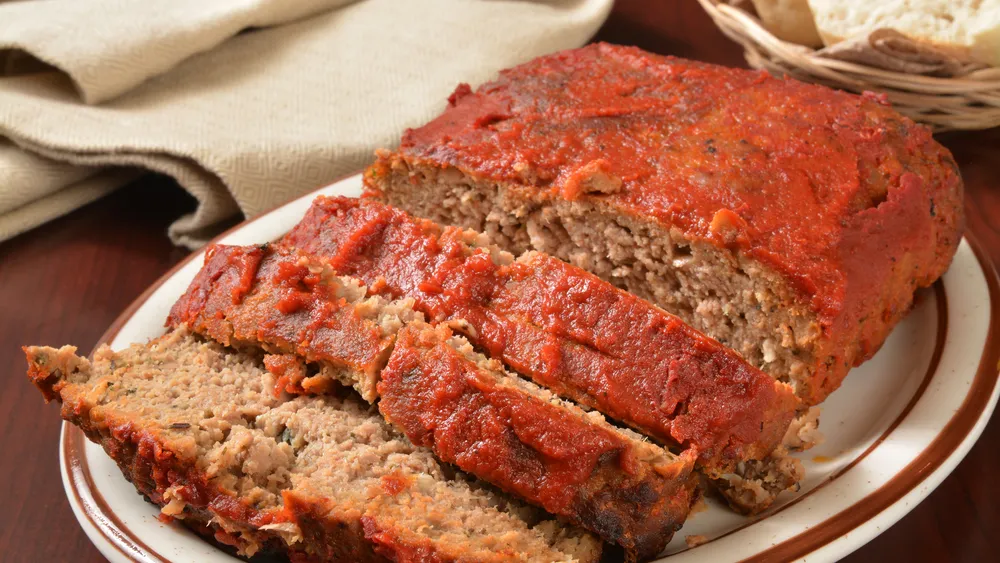

Meatloaf is a dish of ground meat that has been combined with other ingredients and formed into the shape of a loaf, then baked or smoked. The final shape is either hand-formed on a baking tray, or pan-formed by cooking it in a loaf pan.
When it comes to All-American dishes, nothing beats a Classic Meatloaf recipe. And I'm sure you'll agree after one bite that this is the best meatloaf recipe you've ever tried!
In a large bowl, combine the beef, egg, onion, milk and bread OR cracker crumbs. Season with salt and pepper to taste and place in a lightly greased 9X13 inch baking dish.